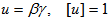
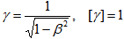
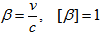
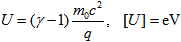
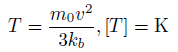
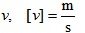
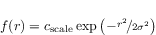
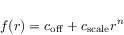
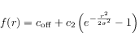

|
|
Particle Source Object
The Object is used to create a new Particle Source for the tracking and the PIC solvers.
Reset
Resets all internal settings to their default values.
Name (name name)
Sets the name of the particle source.
Create
Creates a new particle source. All necessary settings for this object have to be made previously.
Rename (name oldname, name newname)
Changes the name of an existing particle source.
Delete (name name)
Deletes the particle source with the given name.
ParticleType (enum typename)
Type of the emitted particles.
|
typename (enum ) |
meaning |
|
"Userdefined" |
a particle which has to be defined by the charge and mass methods. |
|
"Electron" |
particle with charge and mass properties of an electron. |
|
"Proton" |
particle with charge and mass properties of a proton. |
SourceType (enum type)
Set the source type. Possible values are:
Faces
SinglePoint
Circle
Charge (double charge)
Value of the charge (C).
Mass (double mass)
Value of the mass (kg).
Tracking emission model settings
TrkEmissionModel( enum model )
Describes the emission model of the particle source.
|
model (enum) |
meaning |
|
"Fixed" |
Fixed kinetic emission energy. |
|
"Space charge" |
Space charge limited emission model. |
|
"Thermionic" |
Temperature dependent emission model. |
|
"Field-induced" |
Field-induced emission model. |
TrkKinetic( enum type, name distribution, double value, double spreadKinetic, double spreadAngle, double maxwellTemp, double maxwellBins )
Kinetic settings of the emission model. The kinetic type has to be one of the following values.
|
type (enum) |
meaning |
|
|
"Normed Momentum" |
normed momentum |
 |
|
"Gamma" |
relativistic factor |
 |
|
"Beta" |
velocity relative to speed of light |
 |
|
"Energy" |
kinetic particle energy |
 |
|
"Temperature" |
temperature (instead velocity) |
 |
|
"Velocity" |
velocity |
 |
with c = speed of light, q = charge of particle and m0 = initial mass of particle.
The kinetic distribution can be "Uniform" or "Maxwell".
Value is the value for the entered kinetic type.
The kinetic spread has to be specified in percent.
An emission angle distribution can be defined by entering a non-zero angle spread.
If the distribution is set to Maxwell", the Maxwell temperature will be used to calculate the kinetic start settings.
Enter the number of Maxwell bins of the Maxwell distribution.
TrkField( double linear, double exponential )
Defines the linear and the exponential parameters for the field emission model.
TrkFixed( double currentParameter, bool useCurrentDensity )
Defines the current of the current density for the fixed emission model. If useCurrentDensity is true, currentParameter represents a current density. Otherwise, it represents a current.
TrkOblique( double angleTheta, double anglePhi )
Defines the angles theta and phi for the oblique emission feature in the fixed emission model.
TrkSCL( bool calcKineticAuto, name emitPotName, double emitPotValue, name refPotName, double refPotValue, double virtualDistance )
Defines the model parameters for the space charge limited emission model.
If calcKineticAuto is true, the kinetic start settings will be automatically calculated by the solver (based on the emission model).
Enter the potential names in emitPotName and refPotName. If a name is "User defined", the potential value has to be entered. Otherwise the value must be an empty string.
The last parameter virtualDistance defines the virtual gap extension
TrkTherm( double temperature, double workFunction, double richardsonConst, bool calcRichardsonConst )
Defines the model parameters for the thermionic emission model. If calcRichardsonConst is true, the Richardson constant will be automatically calculated by the solver. The work function has to be entered in eV, the temperature in Kelvin.
UsePick(bool bPick)
Select, if a pick a pick point is used or not.
StartPoint(double x, double y, double z)
Set the emission point of the particle.
StartNormal(double vx, double vy, double vz)
Set the start normal for the particle.
StartArea (double area)
Set the start area to calculate the current density.
UsePickCircle ( bool bPick )
Selects if a pick face or edge is used or not.
InvertPickedCircleNormal ( bool bPickInvert )
If a pick is used to define the circular source, then this parameter, if true, inverts the source normal.
CircleCenterPoint( double x, double y, double z )
Sets the circle center coordinates.
CircleNormal( double x, double y, double z )
Sets the coordinates of the surface normal.
CircleRadius( double value )
Sets the outer radius of the circular emission area.
CircleRadiusInner ( double value )
Sets the inner radius of the circular emission area.
CircleRadiusLines ( integer value )
Sets the number of concentric equidistant circles lying between the outer and the inner radius, along which the emission points are uniformly distributed.
RadialFunction(enum type)
Sets the type of the emitted charge profile as a function of the radius. For non-constant profiles, the command RadialFunctionParameter must be set too. The parameters cscale and c2 are derived automatically by the condition that the emitted current is consistent with the chosen emission model.
|
type(enum) |
Description |
Equation |
Parameter 1 |
Parameter 2 |
|
"constant" |
Constant as a function of radius. |
|
|
|
|
"gaussian_no_offset" |
Simple gaussian profile. |
 |
Standard deviation |
|
|
"polynomial" |
Polynomial dependency with offset. |
 |
Offset (profile value at r=0) |
Polynomial degree |
|
"gaussian" |
Profile used for version prior to 2018. Only available via VBA. |
 |
Offset (profile value at r=0) |
Standard deviation |
RadialFunctionParameter (int index, double value)
Sets the value of a signle parameter for the type of the radial profile specified via RadialFunction. Index must start from 0. Example of defining a radial profile via VBA:
.Radial Function "gaussian_no_offset"
.RadialFunctionParameter "0", "1.5"
PECSurface (bool PEC_Surface)
Sets the material type of the emitting surface: True for PEC, False for arbitrary material.
ScaleTriangularizationToMesh (bool scale_to_mesh)
When scale_to_mesh = True, the density of the emission points is adapted to the computational mesh. For emission models other than "Fixed", it is recommended to set this flag to True".
FacetOptions ( int density, int scale )
Density can have values between 0 and 90. A density of 0 leads to a coarse triangulation, a value of 90 leads to a fine triangulation. To get very fine triangulations, the scale can be increased. Possible scale values are 1, 10 and 100.
AddFace (solidname name, int faceid)
Add a new surface of a solid to a particle source definition.
Particle-in-Cell emission model settings
PICEmissionModel (enum model)
Describes the PIC emission model of the particle source.
|
model (enum ) |
meaning |
|
"Gauss" |
Particles are emitted in pulses/bunches of a Gaussian charge distribution.. |
|
"DC" |
Emitted particles form a continuous current. |
|
"Field" |
Field emission model based on Fowler-Nordheim equations. |
|
"Explosive" |
Explosive emission model. |
PICEnergy (double value, enum type)
Sets the kinetic emission type and its value for the beam emission model. Possible values for the type are:
Normed Momentum
Energy
Gamma
Beta
Velocity
PICBunchCharge (double value)
Sets the bunch charge for the Gaussian emission model.
PICBunchDefinitionType (enum type)
Sets the state, if the emission bunch is defined in time or space for the Gaussian emission model. Possible values for type are "Time" and "Length".
PICBunchSigma (double value)
Sets the variance of the Gaussian pulse for the Gaussian emission model.
PICBunchCutoffLength (double value)
Sets the cutoff length of the Gaussian pulse for the Gaussian emission model.
PICBunchOffset (double value)
Sets the offset of the Gaussian beam for the Gaussian emission model.
PICNBunches (double value)
Sets the number of Gaussian pulses for the Gaussian emission model.
PICBunchDistances (double value)
Sets the distance between two successive Gaussian pulses for the Gaussian emission model.
PICCurrentDC (double value)
Sets the emitted current of the particle source for the DC emission model.
PICEnergyDC (double value, enum type)
Sets the kinetic emission type and its value for the DC emission model. Possible values for type are:
Normed Momentum
Energy (eV)
Gamma
Beta
Velocity (m/s)
Temperature (K)
PICRiseTimeDC (double value)
Sets the time-span of the rise function, until the steady state current is reached. This applies to the DC emission model.
PICOblique( double angleTheta, double anglePhi )
Sets the angles theta and phi (in degrees) for the oblique emission feature in the DC emission model.
PICEnergyFieldEmission (double value, enum type)
Sest the kinetic emission type and its value for the field emission model. Possible values for type are:
Normed Momentum
Energy (eV)
Gamma
Beta
Velocity (m/s)
Temperature (K)
PICScaleFactorFieldEmission (double value)
Sets the linear parameter for the field emission model.
PICExpFactorFieldEmission(double value)
Sets the exponential parameter for the field emission model.
PICRiseTimeExplosive(double value)
Explosive emission model: sets the rise time.
PICThresholdFieldExplosive(double value)
Explosive emission model: sets the threshold field.
PICResidualFieldExplosive(double value)
Explosive emission model: sets the residual field.
PICCutoffFactorExplosive(double value)
Explosive emission model: sets the factor the filter cut-off frequency. Default value is 2.
GetNumberOfParticleSources int
Returns the number of all defined particle sources.
GetNameofParticleSource( int index) name
Returns the name of the particle source with the specified index number.
ParticleType ("Userdefined")
Charge (1.602177e-019)
Mass (9.109390e-031)
Density (0.8)
PECSurface (TRUE)
ScaleTriangularizationToMesh (TRUE)
EmissionModel ("Fixed")
Energy (0, "Energy")
To illustrate the use of the particle source VBA commands, the following VBA-script is provided. Prior to the particle source creation, a PEC cylinder is created inside a vacuum box. The particle source is defined on one of the faces of the PEC cylinder and the fixed emission model of the tracking solver is used. To test it, open a new CST Particle Studio module in the CST Studio Suite, create a new VBA macro, copy the script into it and run the macro.
' new component: component1
Component.New "component1"
' define brick: component1:vacuum_box
With Brick
.Reset
.Name "vacuum_box"
.Component "component1"
.Material "Vacuum"
.Xrange "-1", "1"
.Yrange "-1", "1"
.Zrange "-1", "1"
.Create
End With
' define cylinder: component1:pec_cylinder
With Cylinder
.Reset
.Name "pec_cylinder"
.Component "component1"
.Material "PEC"
.OuterRadius "0.5"
.InnerRadius "0.0"
.Axis "z"
.Zrange "-0.5", "0"
.Xcenter "0"
.Ycenter "0"
.Segments "0"
.Create
End With
' pick face
Pick.PickFaceFromId "component1:pec_cylinder", "3"
' define particle source: particle1
With ParticleSource
.Reset
.Name "particle1"
.ParticleType "electron"
.Charge "-1.602177e-019"
.Mass "9.109390e-031"
.SourceType "Circle"
.UsePickCircle "False"
.CircleCenterPoint "0", "0", "0"
.CircleNormal "0", "0", "1"
.CircleRadius "0.5"
.CircleRadiusInner "0.3"
.CircleRadiusLines "3"
.PECSurface "False"
.RadialFunction "Constant"
.TrkEmissionModel "Fixed"
.TrkKinetic "Energy", "Uniform", "100", "0", "0", "300", "100"
.TrkFixed "1", "False"
.TrkOblique "0.0", "0.0"
.PICEmissionModel "Gauss"
.PICEnergy "0.0", "Energy"
.PICBunchCharge "0.0"
.PICBunchDefinitionType "Time"
.PICBunchSigma "0.0"
.PICBunchCutoffLength "0.0"
.PICBunchOffset "0.0"
.PICNBunches "1"
.PICBunchDistances "0.0"
.PICAngleSpreadBunchEmission "0.0"
.PICKineticSpreadBunchEmission "0.0"
.Create
End With
| CST Studio Suite 2022 |
|